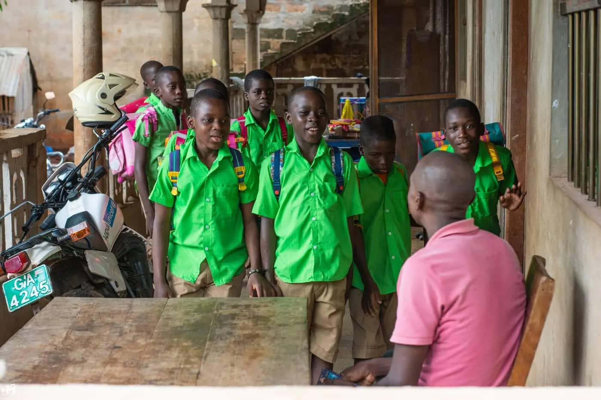
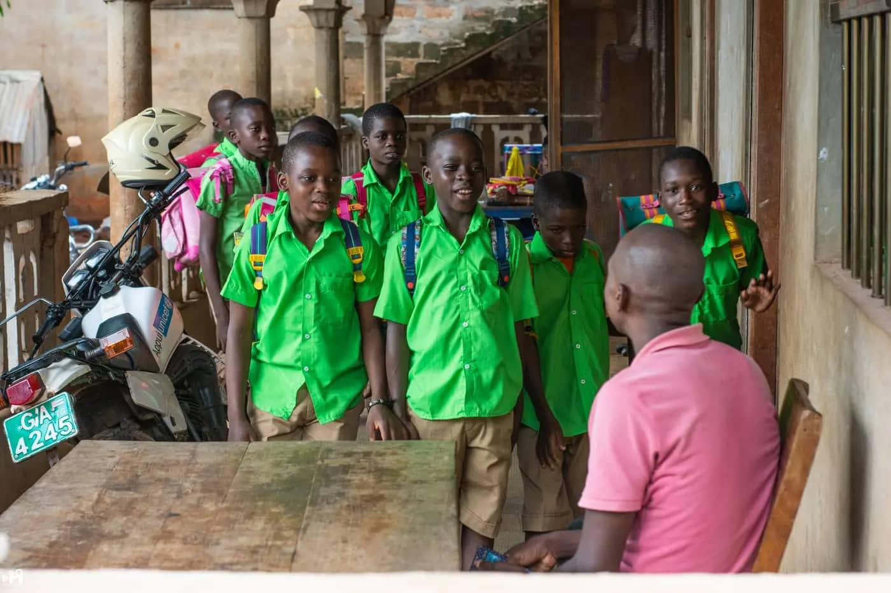

Depuis quelques années, le MAREM accueille sur le Programme EMERA des volontaires, des bénévoles et aussi des stagiaires de plusieurs disciplines universitaires (Psychologie, Assistance sociale, Education spécialisée, Sciences de l’Education, Communication, Coordination de projet et de programmes, Gestion de ressources humaines).
Les personnes qui nous rejoignent sont aussi bien nos compatriotes que des étrangers venant de différents pays.
Le temps moyen d’une expérience de bénévolat ou de stage avec le MAREM est de 03 mois.
Exceptionnellement, de juin à août, le MAREM accueille sur ses projets des personnes (en groupe ou individuel) désireuses d’offrir leur temps, énergie et compétences pour aider les animateurs de nos projets et mettre en place pour les enfants accompagnés des ateliers socioculturels. Tous les profils sont acceptés pourvu que les bénévoles soient motivés et volontaires
Pour toute information, pour postuler au bénévolat ou à un stage,
merci d’adresser votre CV + votre lettre de motivation à :
infos@maremvision.org
Nous avons compris que notre lutte contre le phénomène des enfants de la rue nécessite également une action de prévention en amont, une sensibilisation auprès des plus jeunes pour qui la rue représente une certaine liberté, une vie sans aucune contrainte. A BTCI Zongo, notre zone de travail de terrain, nous avons remarqué qu’il y a des groupes d’enfants qui proviennent de villages assez reculés, emmenés à la rue par un de leur compagnon qui s’y est essayé.
La décision a été donc prise de faire des sensibilisations, surtout en milieu scolaire, dans les zones que nous estimons les plus touchées par le phénomène.
Ce projet a pour objectif principal d’assurer la sensibilisation, notamment par le biais de conférences-débats grand public. Notre but est de prévenir les principaux intéressés, mais également de sensibiliser la population aux dangers et à la réalité de la vie des enfants en situation de rue.
Ensemble pour un avenir meilleur
Depuis 2011, nous sillonnons les écoles primaires de ces villages pour parler de la situation des enfants de la rue. Nous rencontrons quelques fois dans ces établissements scolaires, des jeunes qui se sont déjà aventurés à la rue qui témoignent aux autres des difficultés à y vivre.
Fort d’un partenariat assez solide avec les médias locaux, nous réalisons aussi régulièrement des campagnes médiatiques sur les radios et télévisions locales pour parler de nos actions, des causes du phénomène des enfants en situation de rue et sur la protection que la population peut offrir à ces enfants au lieu de les traiter comme de petits délinquants ou de les exploiter pour des travaux indignes de leur âge.
Nous pensons dès que nous aurons les moyens nécessaires réaliser un documentaire avec les enfants en situation de rue de notre zone et ce projet est en cours d’étude avec notre partenaire de production vidéo, le studio TELCOMTEL.
Notre Maison du Numérique (MDN) a pour objectif principal de faciliter aux jeunes d’Agoè Logopé un accès aux outils numériques, informatiques, et de promouvoir leur utilisation dans les domaines scolaire et associatif. Il est le fruit d’une grande consultation auprès de quinze établissements scolaires de la zone du projet. La MDN donnera aux jeunes étudiants du quartier la possibilité de s’initier au e-learning.
L’initiation et la formation des élèves et de leurs enseignants aux outils informatiques est une des principales missions de notre projet. Équipée d’une trentaine d’ordinateurs et de tablettes, la MDN sera également un espace dédié au renforcement des capacités de communication des associations afin de les aider à donner plus de visibilité à leurs actions, et mobiliser plus de ressources.
L’exécution et la gestion de ce projet sont assurées par notre équipe locale. La pérennisation du projet est assurée par les frais d’abonnement, d’un coût abordable, demandés aux usagers de la MDN.
Depuis quelques années, la mise en place d’un projet permettant de trouver une solution aux difficultés d’accès à Internet et aux services informatiques dans la zone où est implanté le siège social et administratif de l’association MAREM Togo est devenue l’une des priorités tant pour les responsables de cette association que de MAREM France.
Une partie du budget total a pu être collecté, grâce à une forte mobilisation en France autour de ce projet qui a également été soumis à plusieurs subventionneurs publics comme privés.
Nous réfléchissons depuis quelques années à la mise en place de projets générateurs de revenus qui nous permettraient d’aider l’organisation à atteindre progressivement son autonomie dans la réalisation de ses projets sociaux au Togo, afin de ne pas dépendre inexorablement de subventions extérieures pour nos centres de prise en charge des enfants. Dès la réalisation de notre projet Maison du Numérique dont l’inauguration est prévue pour la fin de l’année 2016, nous nous attèlerons à la mise en place de notre projet de ferme agropastorale à vocation pédagogique. Ce projet sera notre priorité de l’année 2017.
L’élevage de volailles, de chèvres, de cochons, le maraîchage, la culture de céréales, sont quelques-unes des activités que nous prévoyons.
La ferme agropastorale bio que nous envisageons de mettre en place devra prioritairement produire les ressources alimentaires suffisantes pour la prise en charge des enfants hébergés dans notre foyer de transit, mais aussi assurer une production supplémentaire que nous pourrons revendre dans les différents circuits de distribution, afin de dégager une plus-value financière pour nos projets sociaux.
A long terme, nous aimerions faire de la ferme, une cour de métiers, un lieu où des enfants que nous retirons de la rue pourront être formés non seulement aux métiers agropastoraux mais aussi à d’autres métiers que nous intégrerons progressivement au projet. Des étudiants de l’Institut National Supérieur des Sciences Agronomiques de l’alimentation et l’environnement, Agrosup de Dijon nous accompagneront dans le montage de ce projet. Nous nous inspirerons aussi d’expériences similaires déjà réalisées au Togo et dans la sous-région.